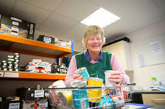

A world without Hunger
Nil-Hunger
Nil-H is a platform that aims to eliminate Hunger. Those who are in needy of food, you can find the location of your nearest local food bank here. Together let's build a world without hunger.
What is a food bank?
A food bank is a non-profit organization or charitable entity that collects, stores, and distributes food to individuals or families in need. Food banks typically rely on donations from individuals, businesses, supermarkets, and government agencies to stock their shelves. They may also receive surplus food from farmers, manufacturers, and retailers. Once collected, the food is sorted, stored, and then distributed to community members through various channels such as soup kitchens, shelters, food pantries, and other distribution points.